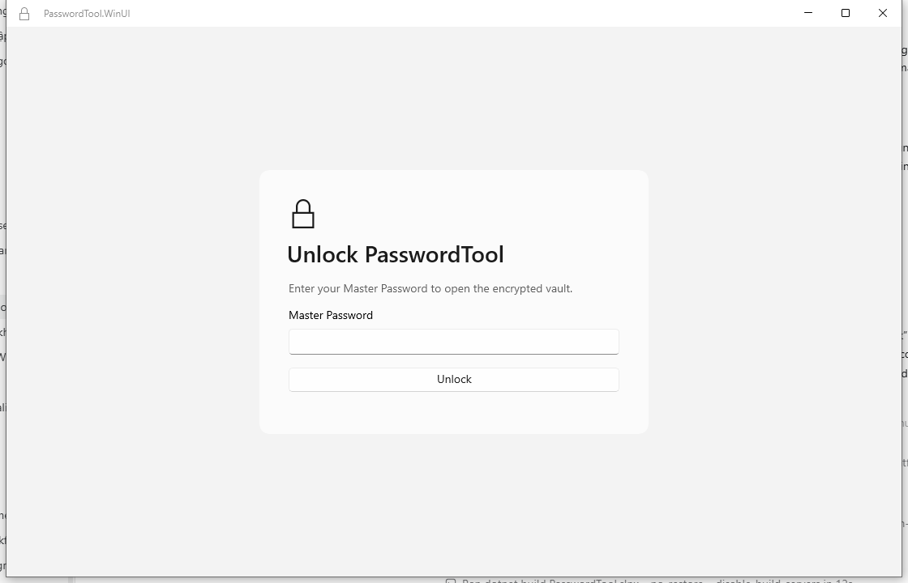

YourSafe
Mật khẩu ở lại
trên máy bạn.
Một kho riêng cho mật khẩu, mã TOTP và mã khôi phục. Lưu cục bộ trên Windows, dùng được khi không có internet.
Tải cho WindowsWindows x64 · Tải từ GitHub Releases
Kiểm tra trạng thái ký trước khi cài.
- Mật khẩuTài khoản & ghi chú
- Mã TOTPMã xác thực cho website
- Mã khôi phụcLưu riêng, tìm nhanh
Bạn giữ quyền kiểm soát.
Gọn trong một kho.
Đủ cho mỗi ngày.
Từ lúc tạo mật khẩu đến lần sao lưu tiếp theo, các công cụ cần thiết ở cùng một chỗ.
- Tìm đúng thứ bạn cần.
- Tìm kiếm cục bộ, đánh dấu yêu thích, sắp xếp bằng thư mục và tags.
- Tạo mật khẩu mới.
- Tạo mật khẩu ngẫu nhiên hoặc passphrase dễ đọc, kèm phản hồi độ mạnh.
- Mã xác thực ngay trong kho.
- Lưu website TOTP cùng mục mật khẩu và xem mã hiện tại. Mã khôi phục có loại mục riêng.
- Chuyển dữ liệu, có kiểm tra.
- Xem trước CSV từ trình duyệt hoặc trình quản lý mật khẩu, thêm tài khoản mới mà không ghi đè tài khoản trùng.
- Sao lưu để có đường trở về.
- Tạo và xác minh bản sao lưu mã hóa bằng passphrase riêng, rồi khôi phục trên Windows mới.
- Rà soát ngay trên máy.
- Kiểm tra mật khẩu yếu, dùng lại hoặc đã cũ mà không gửi giá trị mật khẩu tới dịch vụ online.
Một ứng dụng Windows.
Một kho cục bộ.
Dữ liệu kho được mã hóa bằng AES-256-GCM. Đăng nhập bằng Master Password và mã Authenticator 6 số.
Trong phiên đăng nhập còn hiệu lực, mở khóa lại chỉ cần Master Password. Không cần một tài khoản cloud để bắt đầu.
Đọc mô hình bảo mật
Tải. Kiểm tra.
Rồi bắt đầu.
Bộ cài tự chứa runtime, không cần cài .NET riêng. Chọn gói có trong bản phát hành bạn định dùng.
Chọn gói trên GitHub Releases
Installer (.exe): cài cho người dùng Windows hiện tại, có shortcut trong Start Menu và không cần quyền administrator.
Portable ZIP: giải nén toàn bộ rồi chạy
Xem các bản phát hànhPasswordTool.WinUI.exe. Không chạy bên trong ZIP hoặc chỉ lấy riêng file .exe. Mỗi release có thể cung cấp một hoặc cả hai loại gói.Kiểm tra trước khi chạy
Đọc
release-status.txt: dùng bản SIGNED cho sử dụng thông thường. UNSIGNED dành cho đánh giá developer/test, không phải bản production đã ký.Đối chiếu SHA-256 của gói tải với
checksums.sha256. Với file .exe đã ký, kiểm tra chữ ký hợp lệ trong Properties → Digital Signatures.Get-FileHash .\TEN-GOI-TAI.zip -Algorithm SHA256Thay
TEN-GOI-TAI.zipbằng tên file ZIP hoặc .exe bạn vừa tải.Tạo kho và giữ bản sao lưu
Tạo Master Password, xác nhận Authenticator và lưu Recovery Key riêng ngoài thiết bị. Thử khóa, mở lại và tạo bản sao lưu mã hóa bên ngoài trước khi lưu dữ liệu quan trọng.
Đặt bản sao lưu trên thiết bị hoặc vị trí khác. Snapshot trên cùng ổ đĩa không bảo vệ bạn khi ổ đĩa hỏng.
Trước khi bạn tải.
Ứng dụng có cần internet không?
Không. Ứng dụng desktop chạy cục bộ, không có cloud sync, telemetry hay kiểm tra cập nhật tự động. Bạn cần internet để tải gói từ GitHub; cập nhật phiên bản được thực hiện thủ công.
Quên Master Password thì sao?
Recovery Key có thể đặt lại Master Password và Authenticator cho kho hiện tại. Nếu không còn key, bạn cần bản sao lưu mã hóa dùng được và passphrase riêng của bản sao lưu để khôi phục trên cài đặt mới. Không có bản sao cloud để lấy lại dữ liệu.
Portable có mang theo cả kho không?
Không. Gói chương trình là portable; kho mặc định vẫn nằm trong %LocalAppData%\PasswordTool của người dùng Windows hiện tại. Dùng bản sao lưu mã hóa để chuyển sang máy khác.
Mã hóa có bảo vệ khỏi mọi rủi ro không?
Mã hóa bảo vệ dữ liệu khi lưu trữ. Ứng dụng không bảo vệ khỏi malware, chụp màn hình hoặc Windows đã bị xâm nhập khi kho đang mở. Hãy bảo vệ thiết bị, dùng Master Password mạnh và giữ bản sao lưu bên ngoài.
Gỡ ứng dụng có xóa kho không?
Trình gỡ cài đặt giữ lại dữ liệu kho. Chỉ tự xóa kho khi bạn chủ động muốn xóa dữ liệu và đã có bản sao lưu mã hóa dùng được.
Kho của bạn.
Trên máy của bạn.
Xem gói tải và trạng thái ký trên GitHub Releases.